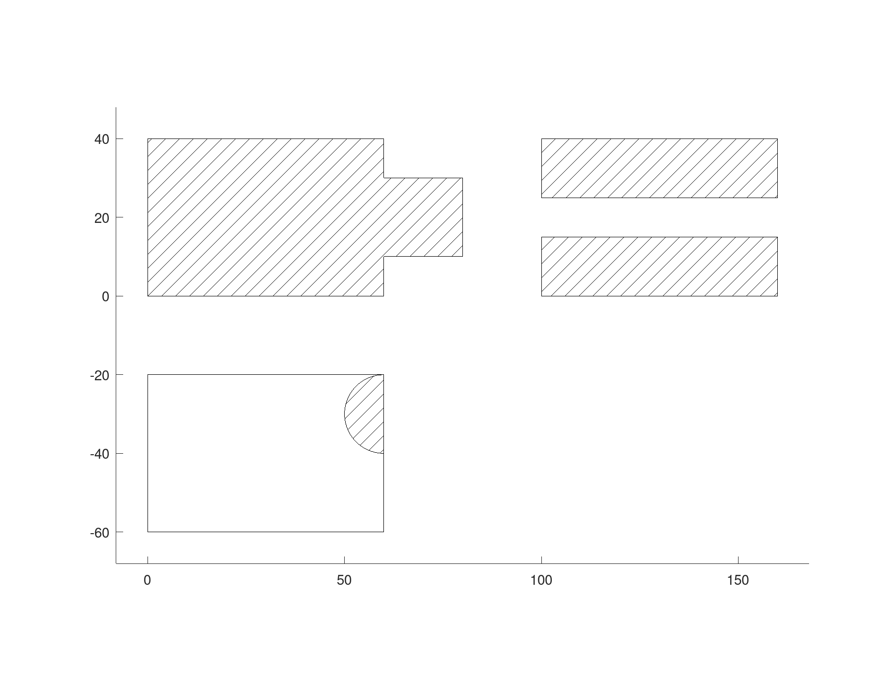
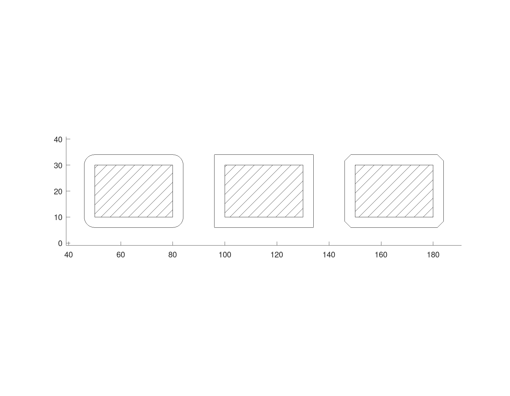
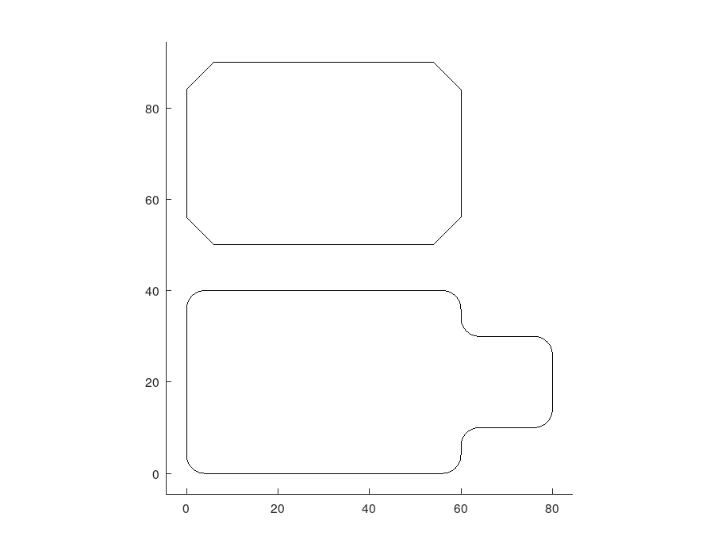
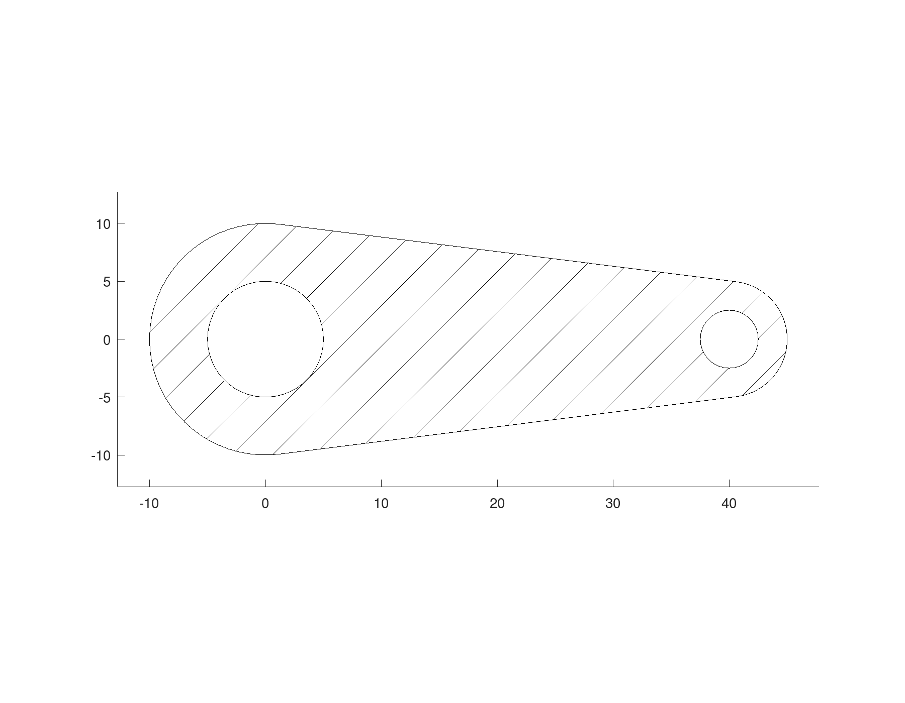
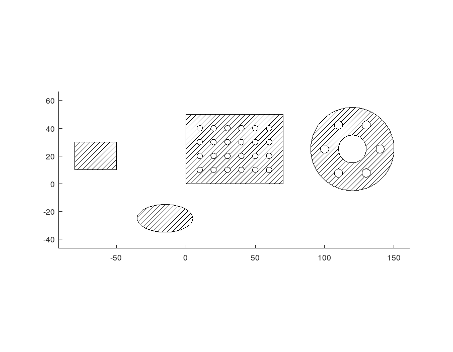
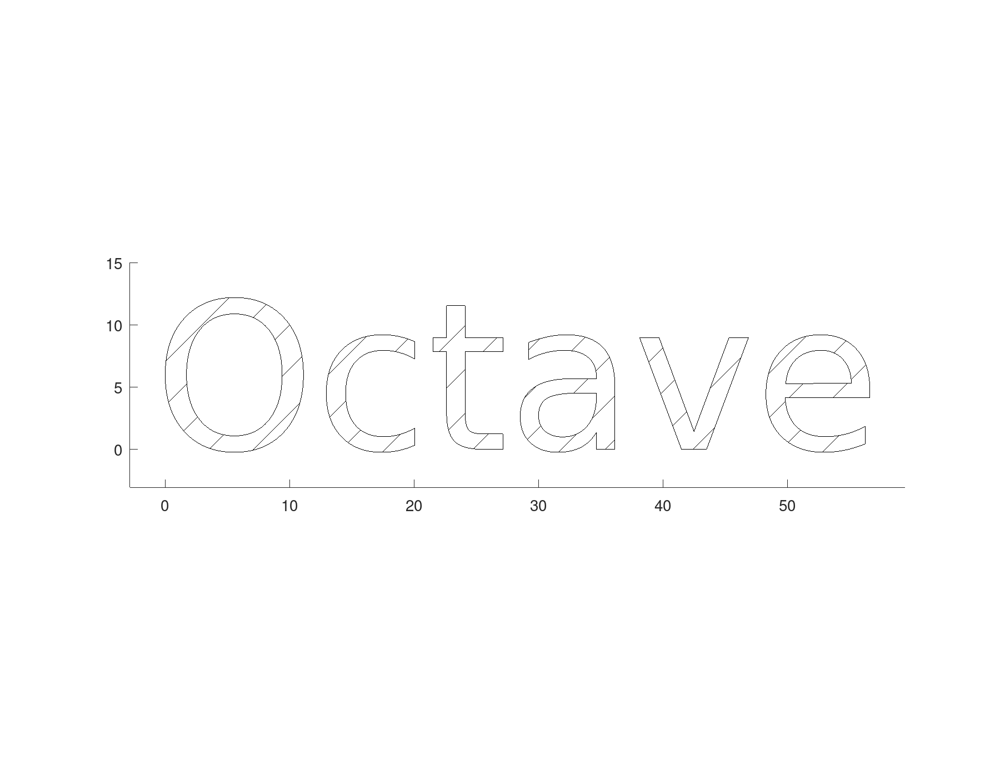
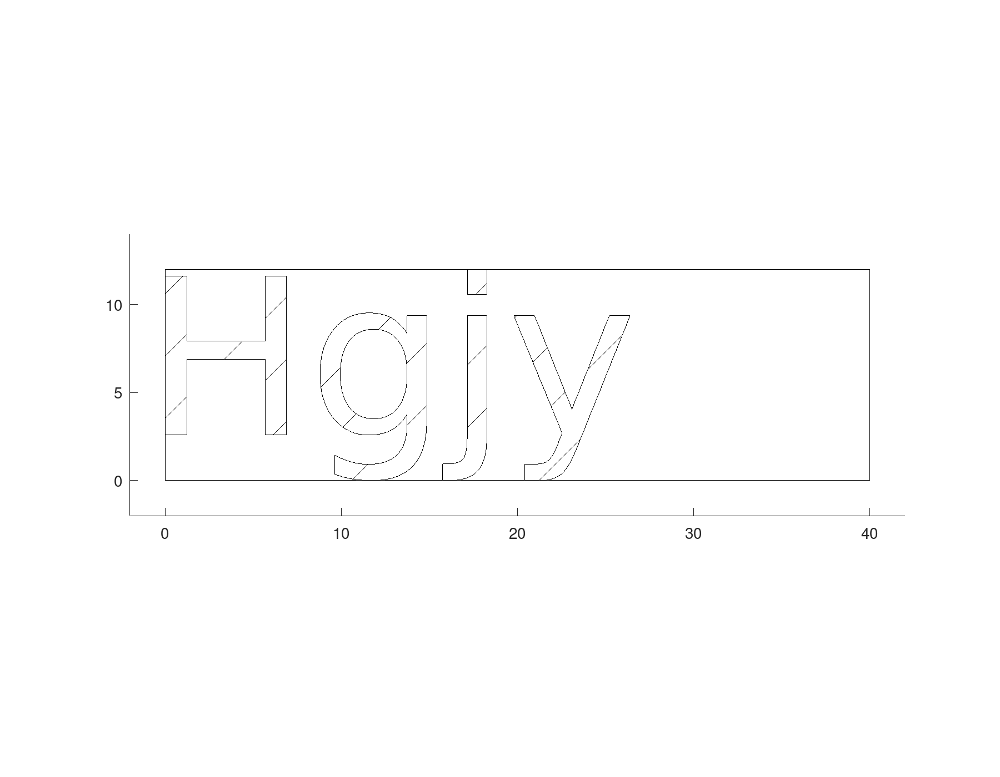

Working with regions
Regions combine, grow, shrink, round off and repeat, as OpenSCAD's 2-D shapes do, but with arcs kept exact: the profile of a part is finished flat, before it becomes a solid.
Combining
union, subtract and intersect take any number of regions. Their result can be one piece or several, so it is always a row cell array of regions, the largest first. A plate and a tab become one outline:
plate = geom.Region ([0, 0; 60, 0; 60, 40; 0, 40]);
tab = geom.Region ([50, 10; 80, 10; 80, 30; 50, 30]);
U = union (plate, tab);
numel (U)
U{1}ans = 1
ans =
geom.Region: an outline of 8 segments, 0 holesSubtracting a bar that runs right across the plate cuts it in two, and each piece is a region of its own.
bar = geom.Region ([-10, 15; 70, 15; 70, 25; -10, 25]);
P = subtract (plate, bar);
numel (P)ans = 2intersect keeps only what the regions share: here the half of a disc that lies on the plate.
I = intersect (plate, geom.Region ([50, 30, 1; 70, 30, 1]));To lay the results side by side, moved shifts a region by an offset, using copy, which is met again below. A hatch fills each result.
moved = @(R, d) copy (R, d){1};
D = draw.Drawing ();
D = D.hatch (U{1});
D = D.hatch (moved (P{1}, [100, 0]));
D = D.hatch (moved (P{2}, [100, 0]));
D = D.region (moved (plate, [0, -60]));
D = D.hatch (moved (I{1}, [0, -60]));
plot (D);
Growing and shrinking
offset moves every edge of a region out by a distance, or in for a negative one. The corners it opens up are round by default; with 'Corners' set to 'sharp' the edges run on until they meet, and with 'chamfer' each such corner is cut off.
rounded = offset (tab, 4);
sharp = offset (tab, 4, 'Corners', 'sharp');
cut = offset (tab, 4, 'Corners', 'chamfer');
D = draw.Drawing ();
D = D.region (rounded{1});
D = D.hatch (tab);
D = D.region (moved (sharp{1}, [50, 0]));
D = D.hatch (moved (tab, [50, 0]));
D = D.region (moved (cut{1}, [100, 0]));
D = D.hatch (moved (tab, [100, 0]));
plot (D);
Shrinking can split a region or leave nothing of it, so offset too returns a cell array.
Corners
fillet rounds every corner of a region where two straight segments meet, the outline's and its holes' alike, and chamfer cuts them. A profile rounded flat is simpler and more exact than a solid's edges rounded afterwards.
F = fillet (U{1}, 4)
C = chamfer (plate, 6);
D = draw.Drawing ();
D = D.region (F);
D = D.region (moved (C, [0, 50]));
plot (D);F =
geom.Region: an outline of 16 segments, 0 holes
Hulls
hull is the shape a band stretched round regions takes, with its straight sides truly tangent to the arcs. Two circles make the outline of a lever, and subtracting two smaller ones gives it its bores.
circle = @(x, r) geom.Region ([x - r, 0, 1; x + r, 0, 1]);
L = hull (circle (0, 10), circle (40, 5))
L = subtract (L, circle (0, 5), circle (40, 2.5));
plot (draw.Drawing ().hatch (L{1}));L =
geom.Region: an outline of 6 segments, 0 holes
Size, mirror and copies
resize scales a region to a size. Evenly by default; with 'Uniform' false each direction on its own, so a circle stretched becomes an exact ellipse. mirror reflects a region in a line, here the y axis.
E = resize (circle (0, 5), [40, 20], 'Uniform', false);
M = mirror (tab, [1, 0]);copy places copies moved by each row of offsets, rectarray in rows and columns, and polararray round a point. Each unites its copies and returns them as a cell array, ready to be subtracted in one step: a grid of holes in a plate, and a flange with six bolt holes on a circle.
G = rectarray (geom.Region ([8, 10, 1; 12, 10, 1]), [6, 4], [10, 10]);
perforated = subtract (geom.Region ([0, 0; 70, 0; 70, 50; 0, 50]), G);
B = polararray (geom.Region ([17, 0, 1; 23, 0, 1]), 6, 360);
flange = subtract (geom.Region ([-30, 0, 1; 30, 0, 1], ...
{[-10, 0, 1; 10, 0, 1]}), B);
D = draw.Drawing ();
D = D.hatch (perforated{1});
D = D.hatch (moved (E, [-30, -30]));
D = D.hatch (M);
D = D.hatch (moved (flange{1}, [120, 25]));
plot (D);
Text
geom.text gives the outlines of letters in any installed font, as regions: a letter with a counter, such as O, is a region with a hole.
T = geom.text ('Octave', 'Height', 12);
numel (T)
D = draw.Drawing ();
for k = 1:numel (T)
D = D.hatch (T{k});
endfor
plot (D);ans = 6
A part from them
The lever, finished flat, needs only to be raised into a solid, and the text to be raised on top of it.
S = solid.extrude (L{1}, 6);
name = geom.text ('L1', 'Height', 5, 'HAlign', 'center', ...
'VAlign', 'center', 'UCS', geom.UCS ([0, 0, 1], [20, 0, 6]));
for k = 1:numel (name)
S = union (S, solid.extrude (name{k}, 1));
endfor
show (S);